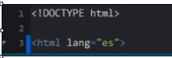
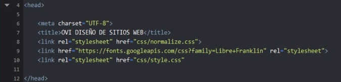
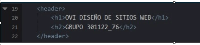
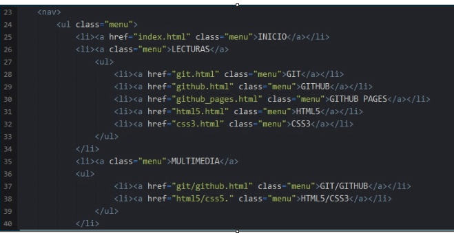
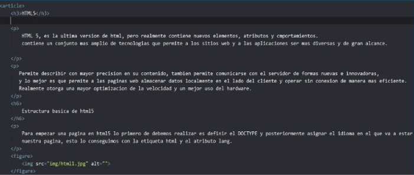
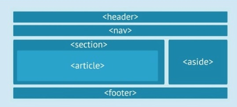

HTML es un lenguaje de marcado que sirve para describir de una manera estructurada mediante etiquetas
el contenido de un documento. Esto tiene la gran ventaja de que podemos añadir con ello semántica (significado)
al documento que una máquina puede entender.
Estructura básica de un HTML
Para empezar una página en html5 lo primero de debemos realizar es definir el DOCTYPE y posteriormente asignar
el idioma en el que va a estar nuestra página, esto lo conseguimos con la etiqueta HTML y el atributo lang.

Imagen 4.1. HTML Parte 1. Creación propia.
De esta forma indicaremos que nuestra página está escrita en html5 y que el idioma de su contenido es español.
Luego va la etiqueta HEAD, en esta agregaremos la etiqueta meta para designar el codificado de nuestra página,
la cual pondremos UTF-8 esto con el fin de que nos acepte la "Ñ" y otros acentos del español.

Imagen 4.2. HTML Parte 2. Creación propia.
Dentro del head también va la etiqueta tittle, esta designa el título que saldrá en la pestaña superior del navegador
y la etiqueta link, mediante la cual asociamos nuestros estilos creados en css a nuestro documento html5.
Con esto
ya terminaríamos la parte no visible de nuestro sitio, lo siguiente es definir la etiqueta BODY, dentro de esta lo primero
es el HEADER, esta define la cabecera de nuestra página, por lo general aquí tenemos el logo y nombre de nuestro sitio o
en su defecto un baner.

Imagen 4.3. HTML Parte 3. Creación propia.
A continuación del header tenemos la etiqueta nav; la cual identifica la barra de navegación de nuestro sitio web, esta
contiene por lo general las etiquetas ul, lo y li para crear listas y así obtener menús desplegables.

Imagen 4.4. HTML Parte 4. Creación propia.
Luego tendríamos la etiqueta sectión, dentro de esta podremos definir etiquetas h, p, figure. Aunque lo ideal es definir
dentro de nuestra etiqueta section una etiqueta article o articulo y entro de esta empezar a trabajar todo nuestro contenido.

Imagen 4.5. HTML Parte 5. Creación propia.
Por ultimo tendríamos las etiquetas ASIDE y FOOTER, con aside crearemos una barra lateral y con el footer podremos crear el
pie de página de nuestro sitio web.
